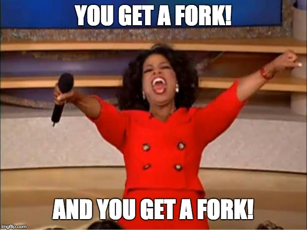
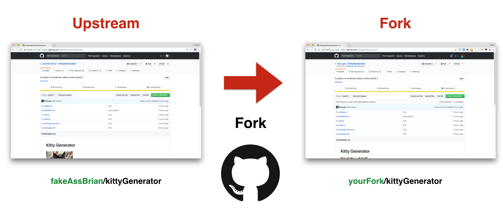
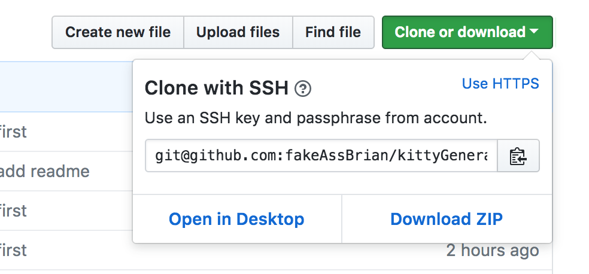

Intermediate git/GitHub
Brian Douglas
What else can I git?
- Fork, Clone, Fetch, and Rebase
- Better understanding of remotes
- More collaboration features through GitHub
github/bdougie

Collaboration
We will take a look at how to better collaborate with git and GitHub using
Project Repo
GitHub tour with fakeAssBrian/kittyGenerator
Fork
the repo
Fork
Clone
Should I SSH or URL?
Remotes
Add an upstream remote locally
git remote add upstream git@github.com:user/repo
Remotes
Add an upstream remote locally
git remote add fork git@github.com:user/repo
Remotes
You can view remotes
git remote -v
You can change remotes via .git/config
atom .git/config
Open a Pull Request
add a new breed to your fork and open a pull request to the upstream
Fetch from the upstream
Keep up with the latest changes
git fetch upstream one-more-kitty
More cool GitHub Things
- Searching with the T command
- code sharing (links snippets, gist)
- Make issues
GitHub Etiquette
- Ask questions
- Be descriptive
- Consider the developer on the end
The End
Now go git it